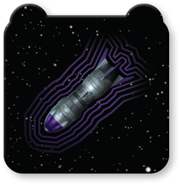

Concussion Bomb

Types: Device, Bomb
At the end of the Activation Phase, this device detonates.
When this device detonates, each ship and remote at range 0–1 is dealt 1 facedown damage card. Then, each ship at range 0–1 must expose 1 damage card unless it chooses to gain 1 strain token.